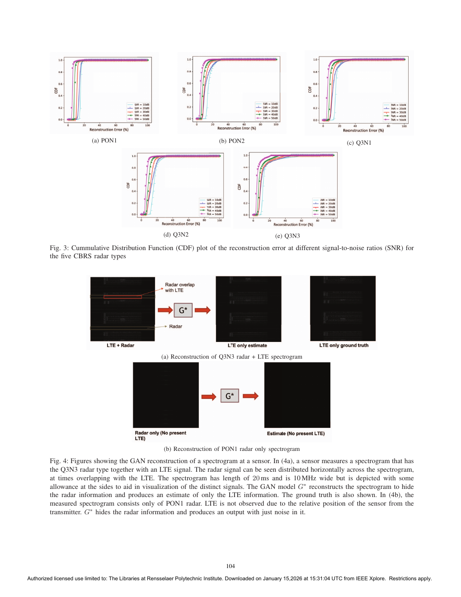

NSF research · IEEE MASS
14 mlocalization error with privacy preserved
Privacy-aware spectrum enforcement
Shared-spectrum enforcement needs to locate unauthorized transmitters, but the same sensor data can expose a protected incumbent—such as a government radar—and its location.
cGANCNNsignal processingCBRSprivacyMATLAB
Read the IEEE paper ↗